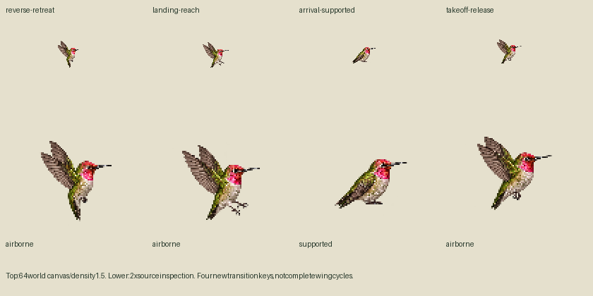
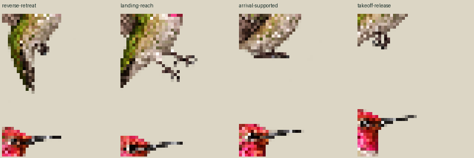

4 new transition keys + 5 exact reuses. One native call. Source-only, unreviewed; no app binding. A reuse is provisional flutter, not smooth biological hover. Reverse, landing and takeoff use one wing key each. Full landing/takeoff joins are held.
Each panel uses 1 CSS pixel per world unit; the untrimmed 96px bird canvas is drawn at 64 CSS pixels. Light/dark. Replay explicitly resets; no seamless-loop claim.
Bill target is a visual point, never a support joint or consumption event. Arrival markers probe two actual toe pixels in one overlapped silhouette; bilateral feet and grip remain unproven. Root continuity within a study does not prove continuity between different key drawings.


Primary sources · Exact mapping · Held joins · One-shot APNG